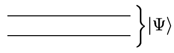

Dirac Notation
Contents
Dirac Notation#
In this section we want to understand how to represent a quantum state of \(n\) qubits carried on \(n\) wires.
One approach is to use Dirac notation.
Classically, we know that a wire carries a bit that can be in a “state” such as \(0\) or \(1\). In a quantum computer, a wire carries a qubit, or quantum bit, that can be in a superposition of states. By this, we mean that the wire’s qubit can be partially in state 0 and partially in state 1. One example of such a state is \(|\psi_1\rangle=\sqrt{0.2} |0\rangle + i \sqrt{0.8} |1\rangle\). A wire in state \(|\psi_1\rangle\) is “\(\sqrt{0.2}\)” in 0 and “\(i\sqrt{0.8}\)” in 1. We call \(\sqrt{0.2}\) the amplitude of the wire being in state 0. (Note that when we say a “the wire is in state X”, we mean “the qubit carried by the wire is in state X”.)
Notice a couple things about these amplitudes:
First, amplitudes can be positive, negative, or complex
Second, the sum of the absolute value of the amplitudes squared has to equal 1.

Now, suppose that instead of having one wire, you have two wires. Classically, the two bits carried by the two wires can be in four possible states, “00” or “01” or “10” or “11”. The most general quantum state of two wires is a superposition of all the possible classical states, which can be represented as
An example state is \(|\psi_2\rangle=\sqrt{0.1}|00\rangle + \sqrt{0.4}|01\rangle + (-\sqrt{0.5})|11\rangle\)
There’s another (less general) way to represent what’s going on in two wires. Suppose wire 0 is in the state \(\sqrt{0.2} |0\rangle + \sqrt{0.8}|1\rangle\) and wire 1 is in the state \(\sqrt{0.4} |0\rangle - \sqrt{0.6}|1|\rangle\). Then the total state of the two wires is
This is called a tensor product. It is equal to
It is important to notice that while some states, called product states, can be represented as a tensor product over each wire, this is not true of all states. If you can’t represent the state as a product state, then that state is called entangled. It is a useful exercise to come up with an example of an entangled state of two wires to see why it cannot be written as a product state.
Vectors#
Another approach to represent a quantum state of \(n\) qubits is to use standard vector notation.
Suppose we are going to represent a two qubit (or two wire) state in terms of a vector. The vector is of length \(2^n\) where \(n=\textrm{number of wires}\). In this case there are two wires, so \(n=2\), and the state of our two qubits can be represented as a vector of length \(2^2=4\).
Consider the two wire state we discussed above: \(|\psi_2\rangle\). In vector notation, this state looks like
In words, the amplitude in front of \(|00\rangle\) goes to the 0’th spot in the vector; the amplitude in front of \(|01\rangle\) goes to the 1’st spot; etc.
It will be useful to manipulate states in both Dirac and vector notation and to switch back and forth between the two notations.
Suppose we define the state \(|\psi_2\rangle=\sqrt{0.1}|00\rangle + \sqrt{0.4}|01\rangle + (-\sqrt{0.5})|11\rangle\) in python like
myState=[
(numpy.sqrt(0.1), '00'),
(numpy.sqrt(0.4), '01') ,
(-numpy.sqrt(0.5), '11' )
]
Write a piece of code def PrettyPrintBinary(myState) to take this state and print it out in a pretty way like:
( 0.316227766017 |00> + 0.632455532034 |01> + -0.707106781187 |11>)
Notice that we have been considering two qubit states with a basis in a binary representation. By that, we mean that the four basis vectors, \(|00\rangle, |01\rangle, |10\rangle, |11\rangle\), are written as binary strings. However, we can equivalently use a different notation where the basis vectors are written as decimal integers, \(|0\rangle,|1\rangle,|2\rangle,|3\rangle\), instead. It is useful to examine states in their binary and decimal bases.
Therefore, write some code def PrettyPrintInteger(myState) that prints out the state in the decimal (or integer) basis:
( 0.316227766017 |0> + 0.632455532034 |1> + -0.707106781187 |3>)
(This code should work for any number of wires.)
Grading
Post the output of the following code into your document:
myState2=[
(numpy.sqrt(0.1)*1.j, '101'),
(numpy.sqrt(0.5), '000') ,
(-numpy.sqrt(0.4), '010' )]
PrettyPrintBinary(myState2)
PrettyPrintInteger(myState2)
Now, write code def StateToVec(myState) and def VecToState(myVec) which converts back and forth between states in vector notation and states in Dirac Notation.
Grading
Post the output of the following code into your document.
print(StateToVec(myState2))
print(VecToState(StateToVec(myState2)))